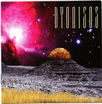

| Artist: | Dyonisos |
| Title: | Dyonisos |
| Label: | Mals MALS 113 |
| Length(s): | 75 minutes |
| Year(s) of release: | 2006 |
| Month of review: | [07/2008] |
| 1) | Prolog 3.42 | |
| 2) | Moanalua Gardens 5.50 | |
| 3) | Keahiakahoe 3.49 | |
| 4) | Sunset On The Ridge 3.41 | |
| 5) | Omega Moonlight 1.50 | |
| 6) | We Will Never Leave This Place 6.24 | |
| 7) | I'm Ready Now 4.34 | |
| 8) | The Phone Call 5.14 | |
| 9) | Haiku 7.51 | |
| 10) | Come Along For The Ride 4.55 | |
| 11) | Total Eclipse 4.21 | |
| 12) | Crossing The Rainbow Bridge 3.29 | |
| 13) | Wantok Payback 4.31 | |
| 14) | The Guitar On The Hill 5.28 | |
| 15) | The Mr. Hagen Show 3.38 | |
| 16) | Juxtaposition 1.19 | |
| 17) | Makakilo Sky 6.00 |
As time progresses the cracks in the veneer that might have been expected from a one man outfit appear. The most notable musically -yes, here I go again- is being caused by the boxed drums, too audible on some of the tracks, once again spoiling the effect. Another, of a more technical kind, is -I'm sorry, but I have to say this- a pretty stupid one: even though the tracks run over into another, there are these one second gaps between the tracks. These cause the music to suddenly stop, to continue just a bit later. I tried multiple players, so that can't have been it. Ba-a-a-ad.
Like with latter day Pink Floyd some of the compositions are so accessible that they are pretty poppy. These tracks diminish the impact of the whole, in my opinion. Both tracks six and seven are of the type, creating what might best be called a dip in the album. Apart from that, where I might see some (commercial) merit in recording radio friendly songs for PF, I can find no such justification for this release.
As the album progresses Cowan starts singing a bit more, moving away from the near spoken vocals Waters employs. This is accompanied by a somewhat more open sound, less daunting. This drags the sound into the direction of Tony Carey/Pink Project material, still retaining the progressive feel though, thus closer to the Floyd than the Carey. And just for measure a bit of the atmosphere of Bowie's Major Tom is thrown in, obviously associated with the album's subject matter.